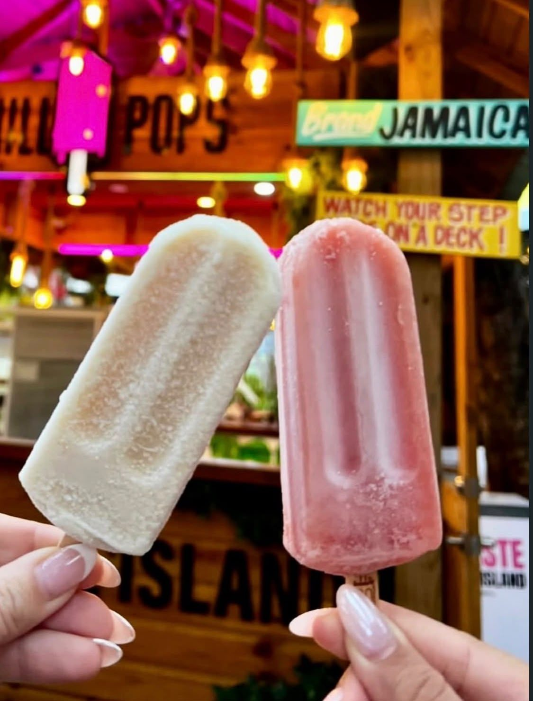

The idea
From a stand
From a stand
to the island.
The idea came to founder Damir Tufail after he tried a popsicle stand in the United States. He came home to Jamaica wanting to invest in Brand Jamaica, and gave the paleta an island twist with Jamaican fruit and flavours.